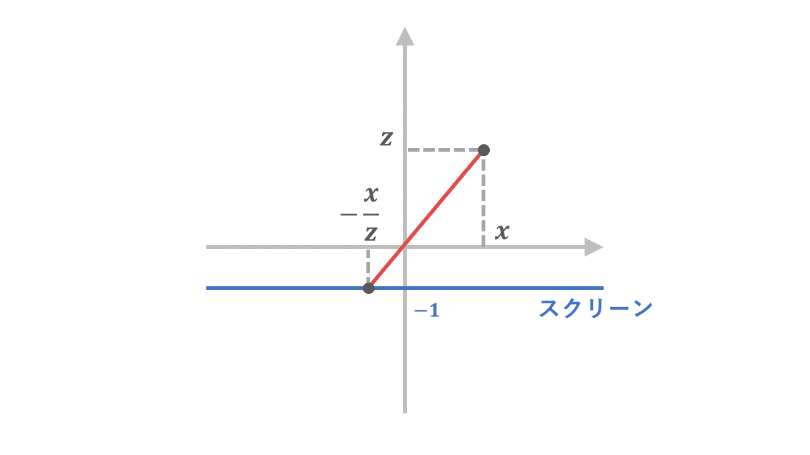

三角関数を用いて立方体を描画して回転させる
初めに
この教材では、三角関数などの数学的な知識を用いて、立方体を表示・回転させるプログラムを作成します。
目次
作成の流れ
投影する関数を作る
立方体を回転させる
作成の流れ
実際にプログラムを作る前に、作成の流れを考えておきましょう。
まず、立方体を画面上に描画するにはどのようにすればよいか考えます。
三次元空間に存在する図形を、モニターという二次元空間に表示させるためには、
その図形が二次元に投影されたときに、どのように見えるのか計算する必要があります。
これを実現するために、ある三次元空間上の点(x3, y3, z3)に対応する、二次元に投影されたときの座標(x2, y2)に変換するプログラムを考えます。
この次に、立方体を回転させるにはどのようにすればよいか考えます。
回転させるには、それぞれの点を極座標表示によって考え、
偏角を大きくしたり小さくしたりすることを考えれば良さそうです。
偏角を変更するために、その点の偏角を取得する必要があり、
それには直交座標からの変換が必要になり、その方法について考えます。
このように、このプログラムの作成では、
①三次元から二次元への座標の変換
②偏角の操作で回転させる
という工程を踏むことになります。
投影する関数を作る
作成の流れで確認したように、まず、三次元から二次元への座標の変換を行う関数を考えます。
ある三次元空間の点を、二次元のスクリーンに映しだすために、
光線が一本だけ通れるような穴をスクリーンと点の間に用意します。
すると、この光線は、点と穴の二点を通る直線となり、スクリーンに一点を表示します。
そしてこの点の座標を求めることができれば、投影ができることになります。
例えば、穴の位置を原点、スクリーンをz=-1とすると、スクリーン上の点の座標はどのようにすれば求められるでしょうか。
今、xz平面は下図のような状況になっていると思います。

ここで三角形の相似を用いて考えると、スクリーン上でのx座標は -x/z であると分かります。
yz平面でも同様に考えると、スクリーン上での座標は、(-x/z, -y/z)と求められます。
では実際にこのプログラムを作ってみましょう！
今回の目的は立方体を描画することなので、
その前段階として、三次元空間のある線分を投影する関数を作ります。
その線分の両端の座標(x1, y1, z1),(x2, y2, z2)を引数として、
投影された線分を表示する関数と考えればよさそうです。
線分は、line関数を用いて描画しましょう。
また、今回は、後程表示させた立方体を回転させるため、
立方体が原点中心に描かれていると都合が良いです。
そのため、中心の点と投影面をそれぞれz方向に-100だけ平行移動させましょう。
function setup() {
createCanvas(200, 200);
}
function draw() {
background(220);
}
function lineprojection(x1, y1, z1, x2, y2, z2){
sx1 = (x1/(-z1+100)) + 100
sy1 = (y1/(-z1+100)) + 100
sx2 = (x2/(-z2+100)) + 100
sy2 = (y2/(-z2+100)) + 100
line(sx1, sy1, sx2, sy2);
}
これを用いて、実際に線分を描画して、関数の動作を確認してみましょう。
作った関数をdraw関数内で実行しましょう。
ここでは試しに、(0,50,0),(0,-50,0)の線分を描いてみましょう。
しかし、このままでは投影後の図形の座標が200前後の値で割られているため、
スケールが非常に小さくなってしまっています。
そこで、投影後の座標をそれぞれ100倍して、スケールを大きくしましょう。
function setup() {
createCanvas(200, 200);
}
function draw() {
background(220);
lineprojection(0, 50, 0, 0, -50, 0)
}
function lineprojection(x1, y1, z1, x2, y2, z2){
sx1 = (x1/(-z1+100)) * 100
+ 100
sy1 = (y1/(-z1+100)) * 100
+ 100
sx2 = (x2/(-z2+100)) * 100
+ 100
sy2 = (y2/(-z2+100)) * 100
+ 100
line(sx1, sy1, sx2, sy2);
}
表示されました！ではこの関数を繰り返し用いて、立方体を描画してみましょう。
原点を中心とした、一辺の長さが50の立方体を描画してみましょう。
方法はいくつか存在しますが、一例を解答例に載せておきます。
function setup() {
createCanvas(200, 200);
}
function draw() {
background(220);
//最前面描画
lineprojection(-25, -25, -25, 25, -25, -25)
lineprojection( 25, 25, -25, 25, -25, -25)
lineprojection( 25, 25, -25, -25, 25, -25)
lineprojection(-25, -25, -25, -25, 25, -25)
//最背面描画
lineprojection(-25, -25, 25, 25, -25, 25)
lineprojection( 25, 25, 25, 25, -25, 25)
lineprojection( 25, 25, 25, -25, 25, 25)
lineprojection(-25, -25, 25, -25, 25, 25)
//それらをつなぐ辺描画
lineprojection(-25, -25, -25, -25, -25, 25)
lineprojection( 25, -25, -25, 25, -25, 25)
lineprojection(-25, 25, -25, -25, 25, 25)
lineprojection( 25, 25, -25, 25, 25, 25)
}
function lineprojection(x1, y1, z1, x2, y2, z2){
sx1 = (x1/(-z1+100)) * 100 + 100
sy1 = (y1/(-z1+100)) * 100 + 100
sx2 = (x2/(-z2+100)) * 100 + 100
sy2 = (y2/(-z2+100)) * 100 + 100
line(sx1, sy1, sx2, sy2);
}
立方体を回転させる
ではここからは、先ほど表示した立方体を回転させます。
まず、xz平面で、ある点(x, z)を、原点を中心にα回転させることを考えてみましょう。
その点と原点を結んだ直線とx軸とのなす角をθ、原点からの距離をrとすると、
求める座標は、(rcos(θ+α), rsin(θ+α))となることが分かると思います。
つまり、座標(rcos(θ+α), rsin(θ+α))を求めることができれば、
ある点を原点を中心にα回転した時の座標を求めることができるということになります。
では、この値はどのようにすれば求めることができるでしょうか。
方法の一つ目として考えられることは、θを直接求め、
それを三角関数に代入することで求める方法です。
点の座標(x, z)は、θを用いて(rcosθ, rsinθ)として表すことができます。
つまり、z/x=tanθとなります。これを満たすθを計算すれば良いことが分かります。
これは、タンジェントの逆関数を用いれば求めることができます。
方法の二つ目として、(rcos(θ+α), rsin(θ+α))を三角関数の加法定理を用いて計算する方法があります。
rcosθ=x, rsinθ=z が分かっているので、これによって、
rcos(θ+α) = xcosα-zsinα
rsin(θ+α) = zcosα+xsinα
と計算することができます。
一つ目の方法は、直交座標を極座標に変換する普遍的な方法として有用ですが、
二つ目の方法では、直接θを計算することなく、点の座標(x, z)をそのまま用いることで計算することができます。
こちらの方が記述が簡単なので、今回はこちらの方法によって記述していこうと思います。
プログラムを作っていきましょう。ここでも先程投影したのと同様に、関数を作って動かします。
今回は、マウスの動きによって回転させるプログラムにしたいので、
マウスの位置を角度情報に変換する必要があります。
これは単純に、マウスのx座標0～200を、x方向の回転角-π~πなどに対応させれば良いので、
下のプログラムのような変換が考えられるでしょう。
画面上でマウスを横に動かしてみると、値が-π~πまで変化していることが分かると思います。
これを回転角として、図形を回転させましょう。
まず初めに、図形をxz平面内で回転させ、そこからyz平面での回転をさせるという方針で考えましょう。
xz平面内での回転後の座標は、先述の議論から、(xcosα-zsinα, zcosα+xsinα)で表されることが分かるので、これを関数に落とし込んでみましょう。
function setup() {
createCanvas(200, 200);
}
function draw() {
background(220);
//最前面描画
lineprojection(-25, -25, -25, 25, -25, -25)
lineprojection( 25, 25, -25, 25, -25, -25)
lineprojection( 25, 25, -25, -25, 25, -25)
lineprojection(-25, -25, -25, -25, 25, -25)
//最背面描画
lineprojection(-25, -25, 25, 25, -25, 25)
lineprojection( 25, 25, 25, 25, -25, 25)
lineprojection( 25, 25, 25, -25, 25, 25)
lineprojection(-25, -25, 25, -25, 25, 25)
//それらをつなぐ辺描画
lineprojection(-25, -25, -25, -25, -25, 25)
lineprojection( 25, -25, -25, 25, -25, 25)
lineprojection(-25, 25, -25, -25, 25, 25)
lineprojection( 25, 25, -25, 25, 25, 25)
}
function lineprojection(x1, y1, z1, x2, y2, z2){
//回転角計算
thetaX = ((mouseX-100)/100) * PI //x方向の回転角
thetaY = ((mouseY-100)/100) * PI //y方向の回転角
//回転後の座標計算
const [rx1, ry1, rz1] = pointrotate(x1, y1, z1, thetaX, thetaY);
const [rx2, ry2, rz2] = pointrotate(x2, y2, z2, thetaX, thetaY);
sx1 = (rx1/(-rz1+100)) * 100 + 100
sy1 = (ry1/(-rz1+100)) * 100 + 100
sx2 = (rx2/(-rz2+100)) * 100 + 100
sy2 = (ry2/(-rz2+100)) * 100 + 100
line(sx1, sy1, sx2, sy2);
}
function pointrotate(x ,y, z, thetaX, thetaY){
ax = x * cos(thetaX) - z * sin(thetaX)
ay = y
az = z * cos(thetaX) + x * sin(thetaX)
return [ax, ay, az]
}
回転することができました！では、縦方向の回転も実装しましょう。
横方向に回転させた後に、縦方向に回転させると考えて、実装してみましょう。
function setup() {
createCanvas(200, 200);
}
function draw() {
background(220);
//最前面描画
lineprojection(-25, -25, -25, 25, -25, -25)
lineprojection( 25, 25, -25, 25, -25, -25)
lineprojection( 25, 25, -25, -25, 25, -25)
lineprojection(-25, -25, -25, -25, 25, -25)
//最背面描画
lineprojection(-25, -25, 25, 25, -25, 25)
lineprojection( 25, 25, 25, 25, -25, 25)
lineprojection( 25, 25, 25, -25, 25, 25)
lineprojection(-25, -25, 25, -25, 25, 25)
//それらをつなぐ辺描画
lineprojection(-25, -25, -25, -25, -25, 25)
lineprojection( 25, -25, -25, 25, -25, 25)
lineprojection(-25, 25, -25, -25, 25, 25)
lineprojection( 25, 25, -25, 25, 25, 25)
}
function lineprojection(x1, y1, z1, x2, y2, z2){
//回転角計算
thetaX = ((mouseX-100)/100) * PI //x方向の回転角
thetaY = ((mouseY-100)/100) * PI //y方向の回転角
//回転後の座標計算
const [rx1, ry1, rz1] = pointrotate(x1, y1, z1, thetaX, thetaY);
const [rx2, ry2, rz2] = pointrotate(x2, y2, z2, thetaX, thetaY);
sx1 = (rx1/(-rz1+100)) * 100 + 100
sy1 = (ry1/(-rz1+100)) * 100 + 100
sx2 = (rx2/(-rz2+100)) * 100 + 100
sy2 = (ry2/(-rz2+100)) * 100 + 100
line(sx1, sy1, sx2, sy2);
}
function pointrotate(x ,y, z, thetaX, thetaY){
ax = x * cos(thetaX) - z * sin(thetaX)
ay = y
az = z * cos(thetaX) + x * sin(thetaX)
bx = ax
by = ay * cos(thetaY) - az * sin(thetaY)
bz = az * cos(thetaY) + ay * sin(thetaY)
return [bx, by, bz]
}
これで立方体を描画するプログラムは完成です！おつかれさまでした！
おまけ
今までの知識を用いると、以下のような一人称視点でフィールドを歩いているような表示ができます。
wasdで移動
参考
p5.js widget埋め込み
https://github.com/toolness/p5.js-widget